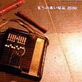
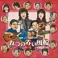
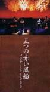
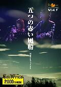

ディスコ3
■2000年〜：再結成から現在まで
作品一覧
先頭の●をクリックすると、その作品へジャンプします
［ＣＤ/アルバム］
●五つの赤い風船2000 ●その先の言葉●これがボクらの道なのか


［ＣＤ/シングル］
［ビデオ］

〔ＤＶＤ〕

［ＣＤ/アルバム］
| 1 |
風がなにかを |
7 |
うろこ雲の絵 |
| 2 |
恋は風に乗って |
8 |
まぼろしのつばさと共に |
| 3 |
遠い空の彼方に |
9 |
血まみれの鳩 |
| 4 |
時 計 |
10 |
悲しみが時を刻んでいる |
| 5 |
上野市 |
11 |
遠い世界に |
| 6 |
そんな気が・・・ |
|
|
西岡たかしボーカル・テナーリコーダー・ソプラノリコーダー・ソプラニーノリコーダー・アルトリコーダー・ビブラフォー
ン・オートハープ、青木まり子ボーカル、中川イサトアコースティックギター・ハイストラングギター・ストリングベン
ダー・バードコール、竹田裕美子アコーディオン・アコースティックピアノ・シンセサイザー・ハモンドオルガン・ケス
ケス・バードコール(以上、五つの赤い風船)。松本亮ドラムス、松田幸一ハーモニカ・ボーラン、西海孝バンジョ
ー、河合徹三ウッドベース、エレキベース、バードコール。 |
| 製作 ガウスエンタテインメント／レーベル THIS ONE／販売 日本クラウンGRCE-2004／2000年2月発売／3000円 |
コメント 西岡たかしをはじめ、オリジナルメンバーの中川イサト、メインヴォーカルにジャネッツやシモンズで活躍し
た青木まり子、キーボードの竹田裕美子を迎え、28年ぶりに「五つの赤い風船」が再結成され、製作された。かつ
てのヒット曲を再アレンジした曲を中心に新曲「哀しみが時を刻んでいる」を含む構成。 |
| 1 |
Theme of Red Balloon |
7 |
まるで洪水のように |
| 2 |
ささ舟 |
8 |
心の中に |
| 3 |
儚(はかな)いまでの悦楽 |
9 |
出逢いたいね！ |
| 4 |
君が好きなんだから |
10 |
吹き出してたり！ |
| 5 |
少年のように |
11 |
その先の言葉 |
| 6 |
二人は |
12 |
Theme of Red Balloon(Reprise) |
| (11)、7は詞=西岡たかし、曲=中川イサト。ほかは全て詞・曲=西岡たかし |
| 発売 DAIICHIKOSHO／販売 ダイキサウンドESD001／2001年5月発売／3000円 |
| コメント 収録曲の半数が新曲。かつての曲ももちろん新しいアレンジで、新生風船の音楽性がより明確に。 |
| 1 |
青い空の彼方から |
6 |
君がやって来る |
| 2 |
ふる里の言葉は |
7 |
夕涼み |
| 3 |
えんだん |
8 |
君のひとみの歌 |
| 4 |
おとぎばなしを聞きたいの |
9 |
渡り鳥よ |
| 5 |
軽く頑張って |
10 |
これがボクらの道なのか |
西岡たかしボーカル・コーラス・ビブラフォン・ハモニカ
青木まり子ボーカル・コーラス
中川イサトボーカル・コーラス・アコースティックギター・
竹田裕美子ピアノ・キーボード・グロッケン・アコーディオン・パーカッション
河合徹三 ウッドベース・エレキベース・マンドリン・ボーラン
丸山もたろう アコースティックギター |
| ROOTS MUSIC ESD-008 2004.3.23 |
| コメント (おおふじ) 私的音楽談義に載せます。 |
●結成40周年記念 五つの赤い風船と仲間たちTOP
| 1 |
風に吹かれてみようか |
6 |
どこまでも飛ぶ |
| 2 |
遠い世界に |
7 |
缶ケリ |
| 3 |
風は心に |
8 |
ぬくもり |
| 4 |
虹の架け橋 |
9 |
恋は時のいたずら |
| 5 |
ばっかり |
10 |
心・静かに |
西岡たかしボーカル・コーラス・ビブラフォン・オートハープ
青木まり子ボーカル・コーラス
中川イサトコーラス・アコースティックギター・
竹田裕美子ピアノ・アコーディオン・パーカッション・コーラス
河合徹三 ウッドベース・エレキベース・フラットマンドリン・コーラス
夏目一朗シンセサイザー・ハーモニカ・缶ケリスト・ピアノ・ウインドチャイム・グロッケン・コーラス
金武 功パーカッション
岸本一遙フィドル
丸山もたろう アコースティックギター |
| 徳間ジャパンコミュニケーションズ TKCA-73182 2007.5.2 |
コメント 1967年4月、西岡たかしの自宅の一室で始まった「五つの赤い風船」。今年（2007年）結成40周年を迎え
ました。
イルカ、南こうせつ、きたやまおさむ、杉田二郎、森山良子、伊勢正三、山本コウタロー、山田パンダ、清水國明、
原田伸郎、なぎら健壱、西岡たかし。すてきな仲間たちが楽曲を書き下ろしてくれました。9曲の新曲と新たに録音
された「遠い世界に」（オートハープバージョン）の全10曲入り。(五つの赤い風船公式サイトより) |
［ＣＤ/シングル］
| 1 |
悲しみが時を刻んでいる |
3 |
悲しみが時を刻んでいる(オリジナル・カラオケ) |
| 2 |
恋は風に乗って |
4 |
恋は風に乗って(オリジナル・カラオケ) |
| 西岡たかし、青木まり子ボーカル、中川イサトアコースティックギター、竹田裕美子(以上、五つの赤い風船)。松田幸一ハーモニカ、河合徹三ベース。 |
| 発売:ガウスエンタテインメント GRDO-26／2000年8月発売／1200円 |
| コメント ボーカルの青木まり子がソマリア内戦のドキュメンタリー番組で見た子どもたちの、内戦で傷つき、薬もなく、学校にも行けず、あるものは兵士として戦う姿に、同じ子どもを持つ母親として涙が止まらなかったことがモチーフになっている。その思いを伝えられた西岡たかしも、後に同番組の再放送を見て、この曲が生まれた。 |
［ビデオ］
| 1 |
Chotto Tropical（作曲:中川イサト） |
8 |
そんな気が・・・ |
| 2 |
風がなにかを |
9 |
うろこ雲の絵 |
| 3 |
まるで洪水のように |
10 |
まぼろしのつばさと共に |
| 4 |
恋は風に乗って |
11 |
血まみれの鳩 |
| 5 |
遠い空の彼方に |
12 |
悲しみが時を刻んでいる |
| 6 |
時 計 |
13 |
遠い世界に |
| 7 |
上野市 |
14 |
アンコール 遠い世界に（シングアウト） |
| 西岡たかし 青木まり子 中川イサト、竹田裕美子、河合徹三 |
| 発売 ガウスエンタテインメント／製造 日本クラウン GSVD-1／VHSステレオ・ハイファイ 105分／2000年10月発売／5000円 |
| コメント 2000年、アルバム［五つの赤い風船］のリリース後、収録曲を中心としたコンサートを4月21日に東京のよみうりホール、5月25日に大阪のサンケイホール、11月21日に東京の練馬文化会館ホールでを行った。このビデオは大阪のサンケイホールの模様を収録。曲はもちろんのこと、西岡たかしのトークもたっぷり収められて、アットホームなコンサートの雰囲気がしみじみと伝わる。 |
〔ＤＶＤ〕
| プロローグ |
上野市（ライブ） |
| 新「五つの赤い風船」結成の経緯 |
感性と表現そして議論 |
| アマチュア時代〜初代「五つの赤い風船」結成 |
メッセージ・ソングの誕生 |
洋楽コピー全盛の時代 早くから自作の曲を
制作 |
音楽クオリティの高いメッセージ・ソング |
| 「五つの赤い風船」誕生 |
血まみれの鳩（ライブ） |
| 風がなにかを・・・（ライブ） |
「悲しみが時を刻んでいる」について |
| 当時の証言−１ |
悲しみが時を刻んでいる（ライブ） |
| プロテスト・フォークにとらわれないサウンド指向 |
新しく生まれ変わる「五つの赤い風船２０００」 |
| 「西岡たかし」の音楽感 |
遠い世界に（ライブ） |
| 遠い空の彼方に（ライブ） |
エピローグ |
| 当時の証言−２ |
|
| 西岡たかし 青木まり子 中川イサト、竹田裕美子、河合徹三＆インタビュー多数出演 |
ROOTS MUSIC DVD COLLECTION -- Vol.1 --
２０００年に、SKY PerfecTV! Ch.267「ザ・フォーク」で放映した映像を収録。約90分
発売元：第一興商 販売元：そしえて DVDK-001 2,000円（税抜）
2003.9.10発売 |
コメント おおふじ ライブ映像は2000年の渋谷エッグマンですね。ルーツサイトの動画と同じ映像ですよね。DVDで出してほしいなと願っていたので、とてもうれしいです。
NHK BSの「フォーク大集合2000」とどっちが先だったのかな? 新生風船の結成間もない頃の映像で、すごく新鮮な感じがしました。西岡さん、まり子さん始め、メンバーのアップがたくさんあってよかったです。 |
|